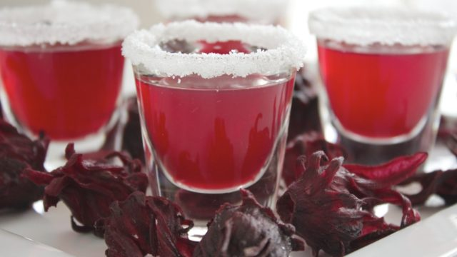

Odin Recipes
Recipes

Description
Zobo is not only refreshing, it can also be used to regulate blood pressure, reduce cholesterol, strengthen blood vessels, calm the nerves, reduce stress, for weight loss, and to improve sex drive.
Ingredients
- 2 cups of dry Zobo leaves
- 1 Tablespoon of cloves
- 2 lumps of ginger
- 4 bowlsof water
- 1 big ripe Pineapple
- Flavours
Steps in Preparation
- In a pot, ass the washed zobo leaves and pour enough water to cover it totally, Cook on medium heat and leave to boil for a few minutes.
- Add the ginger and the garlic, add more water and keep boiling for at least 30 minutes. This is the time it will take for the zobo leaves to be completely soft, then Turn off the heat and set aside to cool down completely.
- Blend your pineapples while your zobo cools, When cool, sieve out the zobo leaves. Then pour the juice through a chiffon cloth to remove tiny particles and leave only a smooth juice.
- Add the pineapple juice. You can sieve it through the chiffon cloth again to make sure there are no particles left.
- Add any artificial flavours of your choice at this time and stir.
- Pour into bottles and refrigerate.